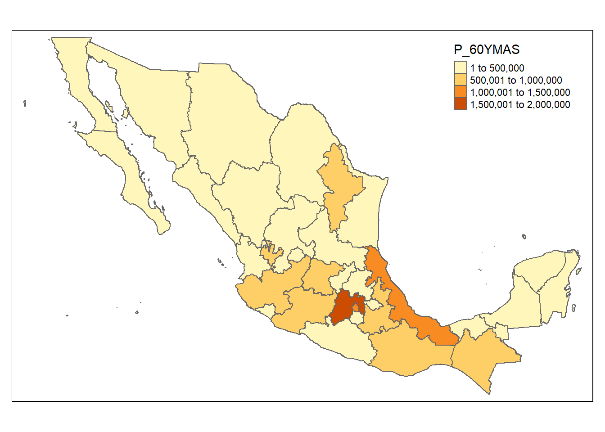
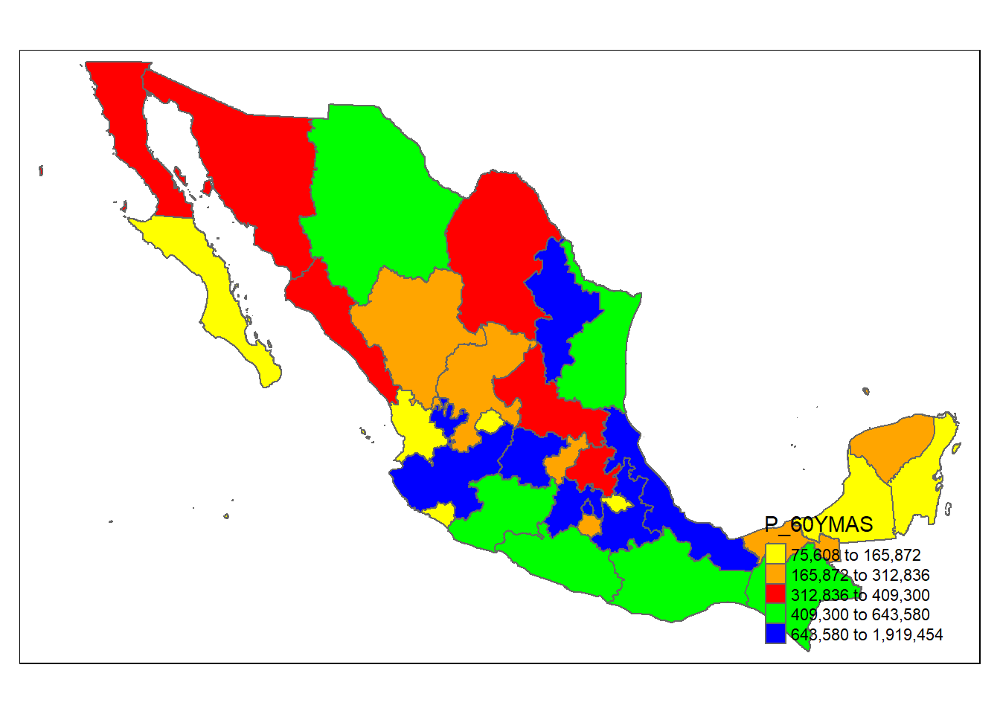
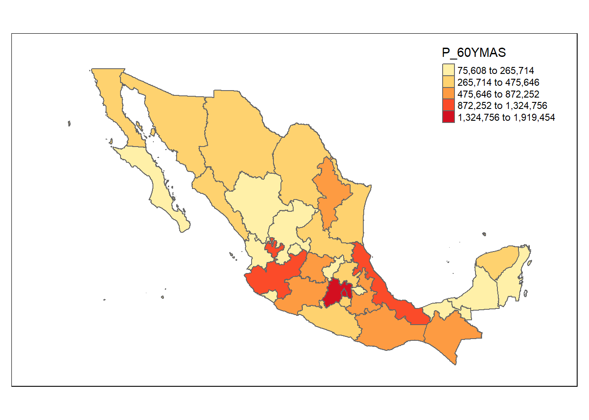
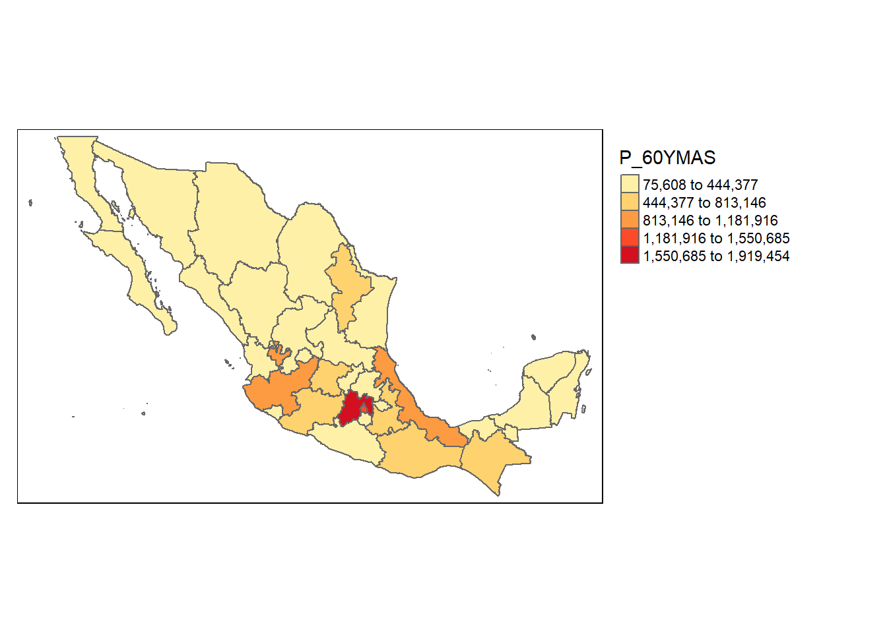
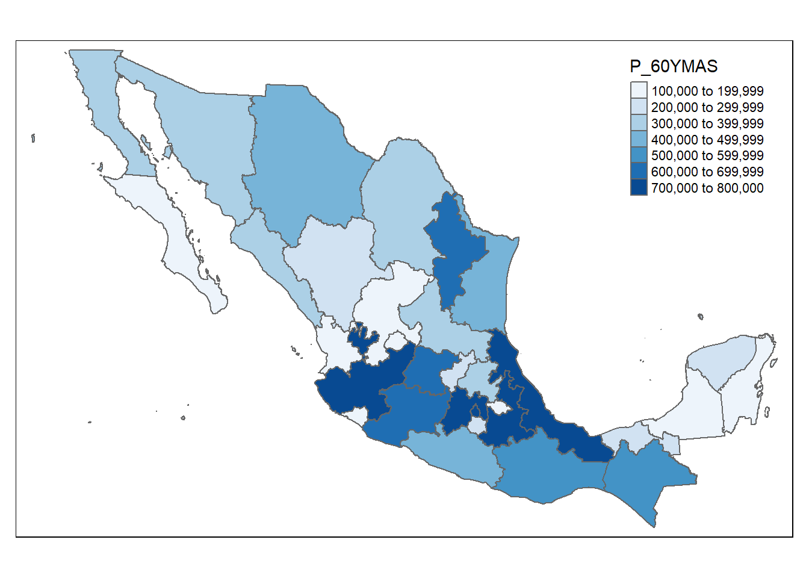
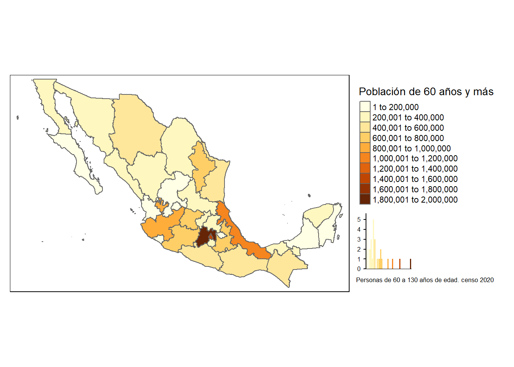
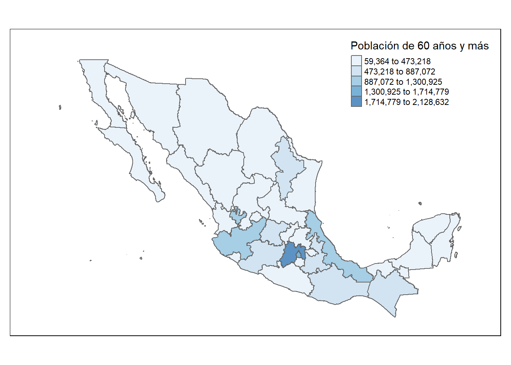
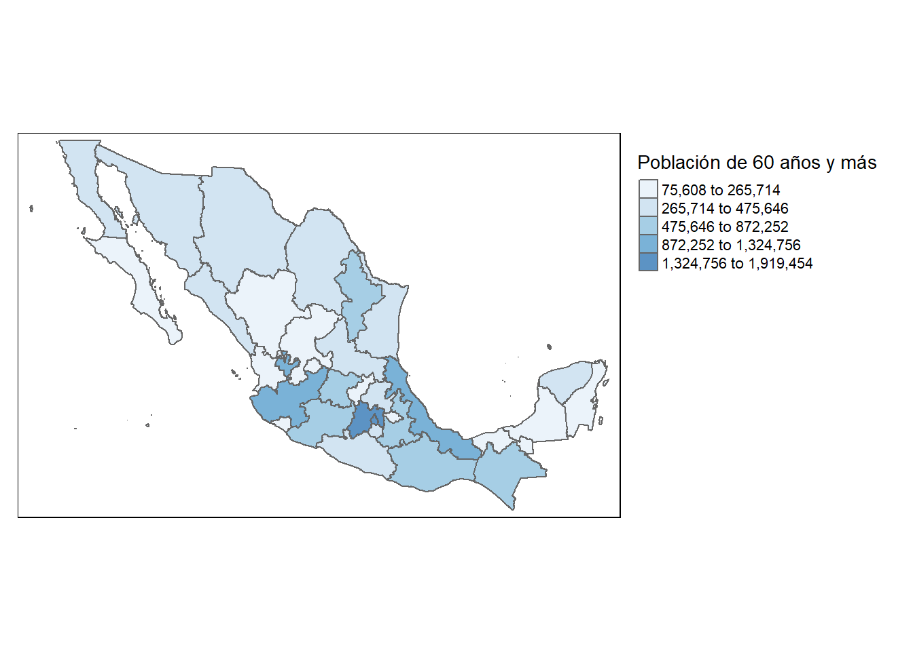
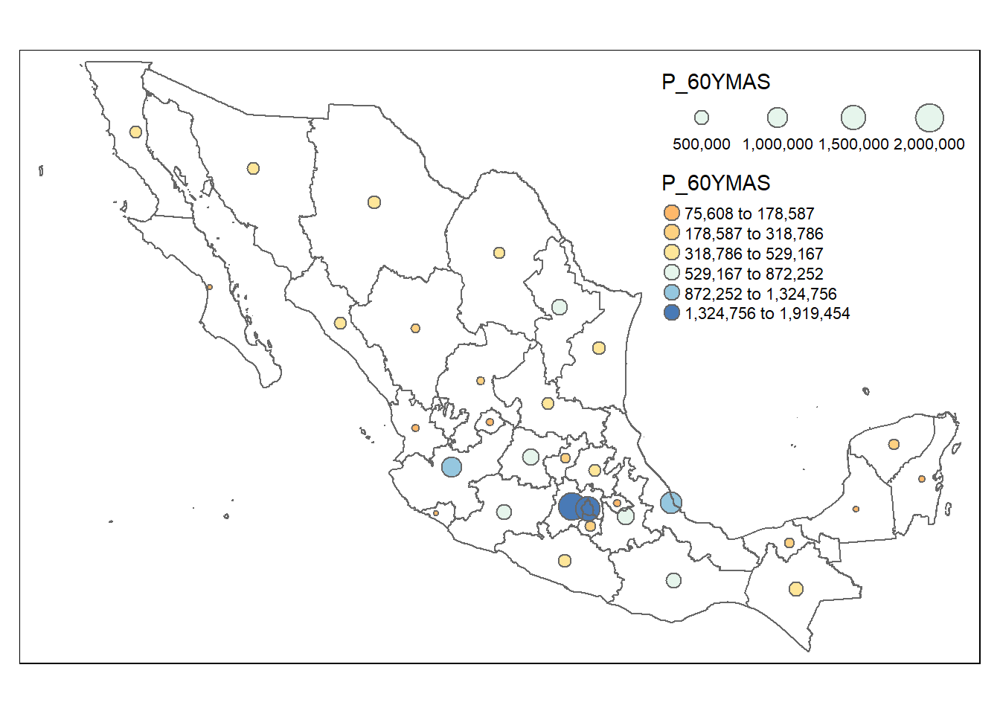
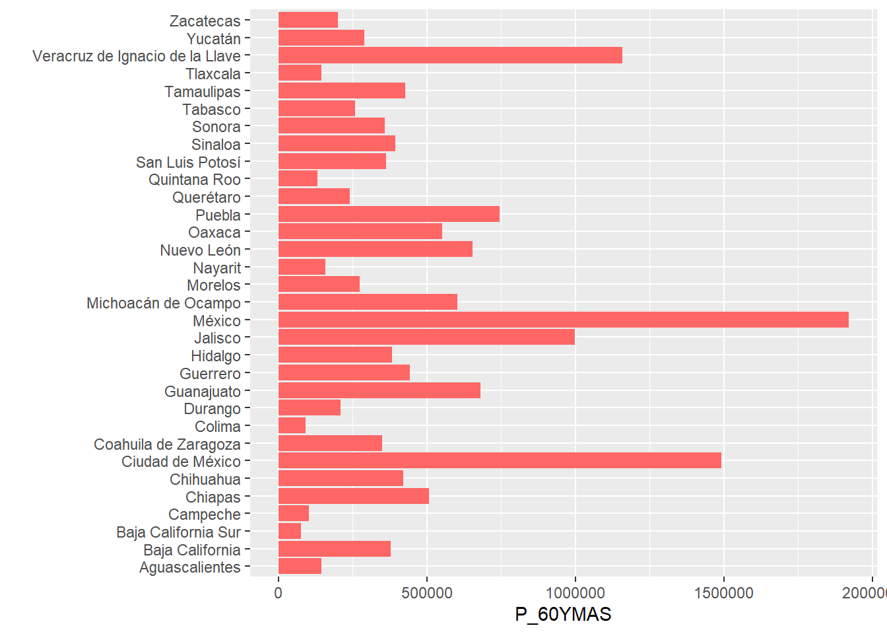

Capítulo 2 Tratamiento de las variables del censo
Se puede seleccionar alguna de las variables del censo para llevar a cabo el tratamiento de la misma, su representación espacial o el análisis descriptivo de sus valores.
Se utiliza como parámetros alguna de las variables, para ejemplificar utilizaremos la población de 60 años y más
2.1 Representación en mapas, el estilo seleccionado está relacionado con la definición de los rangos que se grafican
varname <- c("P_60YMAS")
estilo<-c("pretty")
entidad<-c("Coahuila de Zaragoza")
municipio<-c("Torreón")
indicad<-c("Indenv65")
params <- data.frame(varname,estilo,entidad,municipio,indicad)
tmap_mode("plot")
varindi<-variablescensales[variablescensales$mnemonico == params$varname, "indicador"]
vardesc<-variablescensales[variablescensales$mnemonico == params$varname, "descripcion"]
glue::glue (" {varindi} \n ") %>% cat()## Población de 60 años y más2.1.1 Pretty
glue("El estilo pretty redondea y divide en números enteros siempre que sea posible y los espacia uniformemente. \n \n ") %>% cat() ## El estilo pretty redondea y divide en números enteros siempre que sea posible y los espacia uniformemente.
## tm_shape(basemapa) +
tm_polygons(params$varname)
2.1.2 Quantile
glue("El estilo quantile crea rangos con un igual número de poligonos (estados) \n \n ") %>% cat() ## El estilo quantile crea rangos con un igual número de poligonos (estados)
## tm_shape(basemapa) +
tm_fill(params$varname,palette=c("yellow","orange","red","green","blue"), style ="quantile")+
tm_borders()+
tm_layout(legend.position = c("right", "bottom")) 
2.1.3 Fisher
glue("El estilo fisher crea grupos con la máxima homogeneidad \n \n ") %>% cat() ## El estilo fisher crea grupos con la máxima homogeneidad
## tm_shape(basemapa) +
tm_fill(params$varname,palette="YlOrRd", style ="fisher")+
tm_borders()+
tm_layout(legend.outside = FALSE, legend.outside.position = "right",inner.margins = c(0.06, 0.10, 0.10, 0.08))
2.1.4 Equal
glue("El estilo equal divide los valores en rangos de igual ancho \n \n ") %>% cat() ## El estilo equal divide los valores en rangos de igual ancho
## tm_shape(basemapa) +
tm_fill(params$varname,palette="YlOrRd", style ="equal")+
tm_borders()+
tm_layout(legend.outside = TRUE, legend.outside.position = "right")
2.1.5 Fixed
glue("El fixed divide los valores en rangos de igual ancho \n \n ") %>% cat() ## El fixed divide los valores en rangos de igual ancho
## tm_shape(basemapa) +
tm_fill(params$varname,palette="Blues", style ="fixed",breaks = c(100000,200000,300000,400000,500000, 600000,700000, 800000))+
tm_borders()
tmap_mode("plot")
tm_shape(basemapa) +
tm_fill(params$varname,title={varindi},legend.hist=TRUE ,n = 8) +
tm_borders()+
tm_layout(legend.outside = TRUE, legend.outside.position = "right")+
tm_layout(title = paste0({vardesc}, " censo 2020"), title.size = 0.8, title.position = c("right","bottom"))
#tmap_mode("view")2.1.6 Sd Desviación Estándar
glue("El estilo sd calcula la desviación estándar de la variable y la usa como valor para el ancho de los rangos. \n \n ") %>% cat() ## El estilo sd calcula la desviación estándar de la variable y la usa como valor para el ancho de los rangos.
## tm_shape(basemapa) +
tm_fill(params$varname,title={varindi},alpha=0.7,style="sd",palette="Blues",id="NOM_ENT") +
tm_borders() +
tm_basemap(server="OpenStreetMap",alpha=0.5)+
tm_layout(legend.outside = FALSE, legend.outside.position = "right",inner.margins = c(0.06, 0.10, 0.10, 0.08))
2.1.7 Kmeans medias
glue("El estilo kmeans utiliza la media de la variable y la usa como valor para el ancho de los rangos. \n \n ") %>% cat() ## El estilo kmeans utiliza la media de la variable y la usa como valor para el ancho de los rangos.
## tm_shape(basemapa) +
tm_fill(params$varname,title={varindi},alpha=0.7,style="kmeans",palette="Blues",id="NOM_ENT") +
tm_borders() +
tm_basemap(server="OpenStreetMap",alpha=0.5)+
tm_layout(legend.outside = TRUE, legend.outside.position = "right")
2.1.8 Representación bubbles
tmap_mode("plot")
glue(" \n## params$varname \n \n ") %>% cat()## ## params$varname
## varindi<-variablescensales[variablescensales$mnemonico == params$varname, "indicador"]
vardesc<-variablescensales[variablescensales$mnemonico == params$varname, "descripcion"]
glue::glue (" {varindi} \n ") %>% cat()## Población de 60 años y mástm_shape(basemapa) +
tm_bubbles(size=params$varname,
col= params$varname, style ="kmeans", n=6,
palette ="RdYlBu",id="NOM_ENT")+
tm_borders() 
tmap_mode("plot")2.2 Variable y sus gráficas
basic.stats <- function(dset, vars){
for(i in 1:length(vars)){
print(vars[i])
gg<-ggplot(data=dset, aes(x = dset$NOM_ENT, y = dset[[vars[i]]])) + coord_flip()+
geom_bar(stat="identity", fill = "#FF6666") +
ylab(params$varname) +
xlab("")
print(gg)
print(summary(dset[[vars[i]]]))
print(quantile(dset[[vars[i]]],c(0,.01,.1,.5,.9,.99,1)))
}
}2.2.1 Estadísticas básicas
basic.stats(censonal, c(params$varname))## [1] "P_60YMAS"
## Min. 1st Qu. Median Mean 3rd Qu. Max.
## 75608 207053 370451 473218 563358 1919454
## 0% 1% 10% 50% 90% 99% 100%
## 75608.00 80552.19 132484.40 370450.50 973718.40 1786825.15 1919454.002.3 Video
Este proceso se detalla en el siguiente video